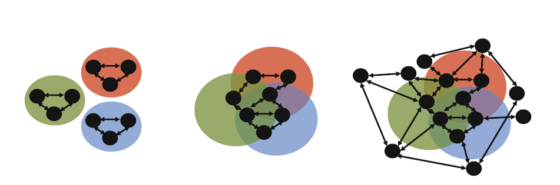

Impulsando la sostenibilidad territorial
Soluciones integrales para la planificación
Soluciones integrales para la planificación
El Centro Holístico de Estudios Territoriales opera en toda la República Mexicana con un equipo compuesto por Geógrafos, Antropólogos, Sociólogos, Biólogos y Ecólogos.
Ofrecemos asesoría, consultoría y capacitación en planificación territorial a gobiernos y sectores públicos y privados.
Promover un desarrollo territorial sostenible, mediante una gestión eficiente e innovadora, asegurar que el territorio mexicano mantenga su vitalidad y riqueza natural y cultural, por eso, buscamos que cada decisión contribuya a un legado duradero.
Nuestro enfoque integral basado en una visión sistémica ofrece soluciones completas que abarcan un análisis multidimensional.
Por medio de un enfoque transdisciplinar combinamos el conocimiento local con la experiencia científica para desarrollar estrategias innovadoras que promuevan el uso sostenible del territorio.

El Departamento de Evaluación y Gestión Territorial ofrece una gama completa de servicios diseñados para abordar los desafíos ambientales, sociales y económicos que enfrentan proyectos y políticas en diversos contextos del territorio. El departamento se dedica a garantizar que los proyectos y políticas no solo cumplan con las normativas vigentes, sino que también contribuyan a un desarrollo equilibrado y sostenible. Con un enfoque multidisciplinario, ofrecemos soluciones que abarcan desde la planificación estratégica hasta la implementación práctica de diversos instrumentos de planeación territorial. Garantizando soluciones efectivas y adaptadas en múltiples escalas espaciales y temporales.
El Departamento de Monitoreo, Evaluación y Conservación de Ecosistemas se dedica a la preservación integral de especies, ecosistemas y paisajes. Con un enfoque multidisciplinario, este departamento lidera la evaluación detallada de la salud ambiental, el monitoreo continuo de la biodiversidad y la implementación de estrategias avanzadas para la conservación y restauración. Ofrecemos soluciones efectivas que aseguren la sostenibilidad y resiliencia de los ecosistemas en todos los niveles, desde lo local hasta lo regional, protegiendo así el equilibrio natural a corto, mediano y largo plazo.
El Departamento de Desarrollo y Gestión de Tecnologías de la Información Geoespacial proporciona soluciones tecnológicas avanzadas para el desarrollo y mantenimiento de infraestructuras de datos e información georreferenciada. Contamos con un equipo de expertos en Cartografía, Sistemas de Información Geográfica, Geomática y Percepción Remota que aseguran el cumplimiento de los más altos estándares nacionales e internacionales. Procesamos datos geoespaciales para obtener información y conocimiento valioso, ofreciendo también servicios de capacitación, automatización de geo-procesos y soporte técnico. Este departamento es fundamental para la creación de una infraestructura sólida de datos geoespaciales que apoya la planificación y la toma de decisiones informada.
El Departamento de Diseño y Gestión de Agroecosistemas Sostenibles se especializa en la creación, evaluación y optimización de agroecosistemas que integran prácticas sostenibles, resilientes y adaptativas. Nuestro objetivo es fomentar la productividad agrícola mientras se conservan los recursos naturales y se promueve la sostenibilidad ambiental. Nuestro enfoque transdisciplinar ofrece servicios especializados para analizar, gestionar y diseñar agroecosistemas que respondan a las condiciones locales y regionales, además de los desafíos climáticos, optimizando tanto la eficiencia productiva como la salud ambiental.
El Departamento de Diagnóstico y Análisis de Socioecosistemas se dedica a estudiar la interacción entre sociedad y ecosistemas con un enfoque sistémico para evaluar el impacto ambiental y social de diversas actividades, promoviendo el desarrollo en todos los niveles. Este departamento se centra en comprender cómo las actividades humanas afectan a los ecosistemas y cómo las condiciones ambientales influyen en la sociedad. A través de investigaciones y análisis detallados, buscamos promover prácticas que beneficien tanto a los ecosistemas como a las comunidades.
El Departamento de Capacitación y Transferencia de Tecnologías se especializa en brindar formación y soporte para la adopción de nuevas tecnologías que optimicen procesos en diferentes áreas. Ofrecemos servicios de formación en geotecnologías para que organizaciones y personas puedan adaptarse a los cambios de manera eficaz.


A continuación, presentamos algunas publicaciones científicas y colaboraciones generadas por los integrantes de nuestro equipo técnico:


Si prefieres, puedes completar nuestro formulario en Google: Haz clic aquí.